En Tinkercad es posible realizar diferentes operaciones con las figuras: Agrupar, Desagrupar, Alineación y Simetría. A continuación, exploraremos cada una de ellas:
Agrupar Figuras
La operación de agrupar figuras te permite combinar múltiples figuras en una sola. Sigue estos pasos:
Elegir Figuras: Selecciona las figuras que deseas agrupar (mínimo dos figuras). Consulta la siguiente ilustración para más detalles:
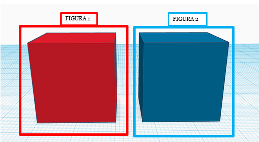
Posicionar las Figuras: Coloca las figuras en la posición deseada. Revisa las ilustraciones correspondientes:
| 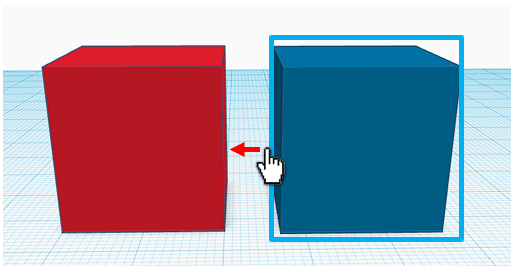 | 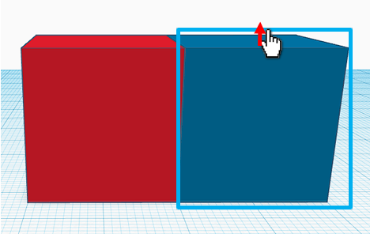 | 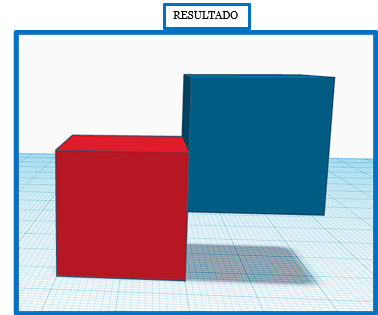 |
Seleccionar las Figuras: Una vez posicionadas, selecciona ambas figuras arrastrando con clic izquierdo. Observa la siguiente ilustración:
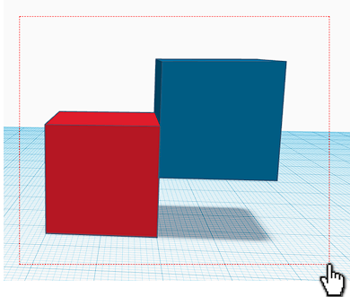
Agrupar las Figuras: Ve a la zona de edición y selecciona "Agrupar". Consulta la siguiente ilustración:
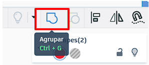
Resultado: Las figuras se mostrarán como una sola figura. Echa un vistazo a la siguiente ilustración:
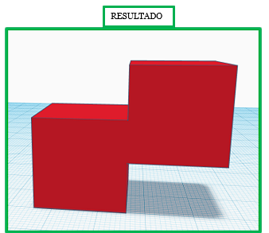
Desagrupar Figuras
Desagrupar figuras te permite separar las figuras agrupadas previamente:
Seleccionar la Figura Agrupada: Haz clic sobre la figura agrupada. Consulta la siguiente ilustración:
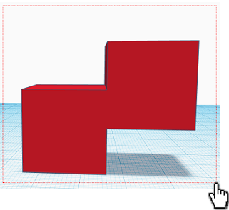
Desagrupar la Figura: Ve a la zona de edición y selecciona "Desagrupar". Observa la siguiente ilustración:
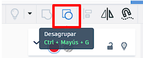
Resultado: Las figuras se podrán usar de forma independiente. Mira la siguiente ilustración:
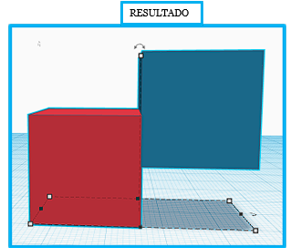
Alineación de Figuras
La alineación de figuras te ayuda a colocar las figuras exactamente en línea. Sigue estos pasos:
Marcar Ambas Figuras: Selecciona las figuras que deseas alinear.
Seleccionar la Opción de Alinear: Ve a la zona de edición y selecciona "Alinear". Consulta la siguiente ilustración:
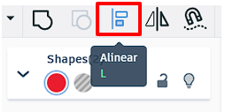
Vista Previa de la Alineación: Mueve el mouse sobre los puntos negros para ver las posibles alineaciones. Revisa las siguientes ilustraciones:
| 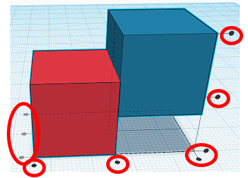 | 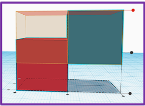 | 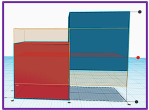 | 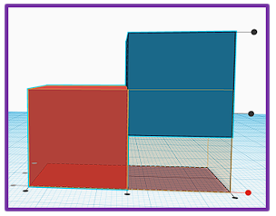 |
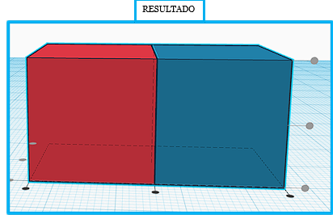
Simetría en Figuras
La simetría permite cambiar la posición de las figuras como si fueran reflejos en un espejo:
Marcar Ambas Figuras: Selecciona las figuras a las que quieres aplicar simetría. Consulta la siguiente ilustración:
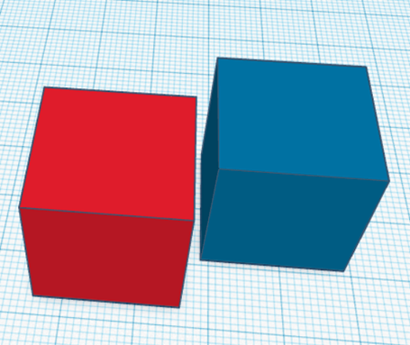
Seleccionar la Opción de Simetría: Ve a la zona de edición y selecciona "Simetría". Consulta la siguiente ilustración:
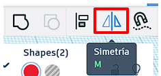
Elegir la Simetría: Selecciona entre las opciones de simetría (eje X, Y o Z). Observa las siguientes ilustraciones:
Elige la opción que mejor se adapte a tus necesidades. Las figuras cambiarán de posición de forma simétrica.
| 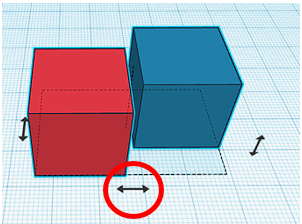 | 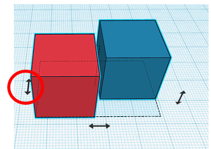 | 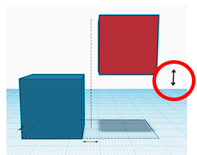 |
| 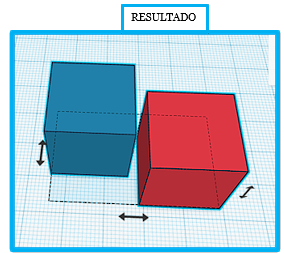 | 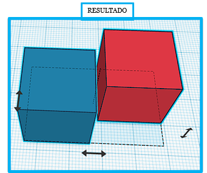 | 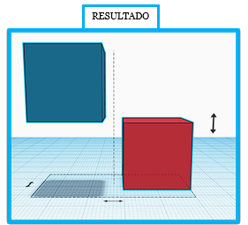 |